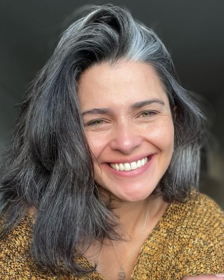

Conheça a Linha OX Ritual Potente
|
Através de pesquisas, a ABIHPEC analisou que no mercado, desde 2020, na pandemia, os itens de cuidado capilar vêm ganhando força, com um crescimento de 12,6%.
Observamos que produtos para cabelos grisalhos já tem uma demanda existente, porém pouco explorada, e por isso que criamos a Ox Plants Ritual Potente, para solucionar os seus problemas e amenizar as suas inseguranças.
|
 |
Potência 30A fragrância da potência 30 é de Laranja-Doce, que traz a sensação de bem-estar, frescor e estimula o positivo. Seus benefícios são para cabelos que não precisam de um tratamento muito específico, para cabelos com poucos ou nenhum fio grisalho. Os produtos dessa potência controlam a oleosidade, evitam a queda capilar e pontas duplas, nutrem o cabelo e muito mais. |
|
Potencia 50A potência 50 contêm a fragrância de sândalo, que traz a sensação de paz e de relaxamento. Principalmente para pessoas que estejam passando por sua transição para o grisalho, proporciona muitos benefícios, como evitar a queda capilar, fazer uma limpeza profunda, restaurar a umidade dos fios, controlar a oleosidade e fortificar o couro cabeludo. |
|
Potência 70A potência 70 possui a fragrância de lavanda, com elementos probiótico que visam a antiqueda, trazem vitamina B7, restauram a biotina dos fios, faz a reconstrução da fibra capilar e o controle do frizz, mantendo os fios saudáveis e selados. Essa potência é indicada para pessoas que já estejam com 100% dos fios grisalhos, já que ela trará um forte tratamento. Além disso, com propriedades calmantes e aromaterapia, a lavanda ajuda no ritual de relaxamento. Também, contamos com a tonalidade roxa que evita o amarelamento dos fios grisalhos. A embalagem dos nossos produtos é branca com roxo, a densidade superior da embalagem é maior, para não escorregar durante o banho e nosso produto tem um ótimo lasti ng, sempre prezando o conforto do nosso consumidor. |
 |
Leave-inPara complementar sua experiência, temos o Leave-in, que age como uma película capilar a fim de manter os nutrientes nos fios, evitar o amarelamento, ter ação de protetor solar e térmico e proporcionar um tratamento externo dos fios. |